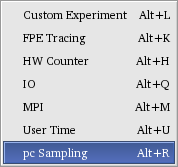
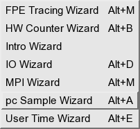

Users Guide
Milestone 7 Release
March 20, 2006
- Introduction to Open|SpeedShop
- Open|SpeedShop
Build and Installation Information
- Building Open|SpeedShop and Open|SpeedShop Development RPM Usage Information
- Installing Open|SpeedShop from Executable RPM package(s) and required RPMS
- Open|SpeedShop Test Information
- Open|SpeedShop
Tools Information
- Open|SpeedShop Invocation Command "openss"
- Open|SpeedShop Quick Start Information
- Running Open|SpeedShop on a cluster or multiple partitions
- Using
the GUI Tool
- GUI Launch Background Information:
- Basic Menus and Menu Item Introduction
- Typical
Open|SpeedShop GUI Wizard Usage
- Introductory Wizard Display
-
- PC Sampling Wizard - Initial Display
- PC Sampling Wizard - Change Sampling Rate Display
- PC Sampling Wizard - Load Executable or Attach To Running Process Display
- PC Sampling Wizard - Enter Executable Dialog Display
- PC Sampling Wizard - Attach To Running Process Dialog Display
- PC Sampling Wizard - Experiment Summary Display
- PC Sampling Experiment Display
- Ready to Run the Experiment
- PC Sampling Experiment - Running Experiment Display
- PC Sampling Experiment - Statistics Display
- PC Sampling Experiment - Split Panel Display
- PC Sampling Experiment - Source and Statistics Relationship Display
- Typical Open|SpeedShop GUI non-Wizard Usage
- Comparing Performance Data using the Open|SpeedShop GUI
- Open|SpeedShop GUI Usage on MPI Applications
- Using the Interactive CLI Tool
- Using the Batch Command Tool
- Scripting API
- Plugin API (Extensibility) Description
- Appendix A: Command Syntax Description
Introduction
to Open|SpeedShop
Brief
Open|SpeedShop Overview
Open|SpeedShop was designed to be modular and extensible. It supports the concept of plugins which allow users, if they so desire, to create their own performance experiments. The project is designed in such a way as to enable value-added plugins to be added to the open source version.
Another key feature of the performance tool is its usability. The user interface is designed so that a degree in computer science is not required to use it. To make the tool usable for a greater range of users, the performance tool will provide novice user Wizards, easily understood language in the user interface components, and interactive help.
SGI will release, primarily under the GPL and LGPL Open Source licenses, the Open|SpeedShop baseline functionality. Support for single system image (SSI) machines, support for clusters (i.e., multiple OS kernels), exclusive and inclusive user time, program counter (PC) sampling, MPI call tracing, Input/Output tracing, Floating point exception tracing and CPU hardware performance counter experiments are the key components of the baseline functionality. The performance tool will be designed in such a manner that will allow users to easily extend the tool by adding their own experiments.
The performance tool will use dynamic probe class library (DPCL) as a building block component for cluster system support. The use of DPCL will provide a portable means for the performance tool to supply cluster support for platforms supported by the Dyninst dynamic instruction package. DPCL uses the Dyninst application programming interface (API) to provide its instrumentation capability.
Availability of the new performance tool based on SpeedShop technology on Linux platforms will enable Fortran (77, 90, and 95), C, and C++ programmers to use an advanced performance analysis tool within the Open Source environment.
Open|SpeedShop is oriented towards gathering and displaying performance data gathered from an application and relating that performance data back to the application's source file, function, and/or line number(s).
Common Terminology
Technical terms can have multiple and/or context sensitive meanings, therefore this section attempts to explain and clarify the meanings of the terms used in this document.
- Experiment: A set of collectors and executables bound together to generate performance metrics.
- Focused Experiment: The current experiment commands operate on. The user may run or view multiple experiments simultaneously and unless a particular experiment is specified directly, the focused experiment will used. Experiments are given an enumeration (expId) for identification.
- Component(s): A somewhat self-contained section of the Open|SpeedShop performance tool. This section of code does a set of specific related tasks for the tool. For example, the GUI component does all the tasks related to displaying Open|SpeedShop wizards, experiment creation, and results using a graphical user interface. The CLI component does similar functions but uses the interactive command line delivery method.
- Collector: The portion of the tool containing logic that is responsible for the gathering of the performance metric. A collector is a portion of the code that is included in the experiment plugin.
- Metric: The entity, which the collector/experiment is gathering. A time, occurrence counter, or other entity, which reflects in some way on the applications performance and is gathered by a performance experiment (by the collector).
- Param: Each collector allows the user to set certain values that control the way a collector behaves. The parameter or param may cause the collector to perform various operations at certain time intervals or it may cause a collector to measure certain types of data. Although Open|SpeedShop provides a standard way to set a parameter, it is up to the individual collector to decide what to do with that information. Detailed documentation about the available parameters is part of the collector's documentation.
- Framework: The set of API functions that allows the user interface to manage the creation and viewing of performance experiments. It is the interface between the user interface and the cluster support and dynamic instrumentation components.
- Plugin: A portion of the performance tool that can be loaded and included in the tool at tool start-up time. Development of the plugin uses a tool specific interface (API) so that the plugin, and the tool it is to be included in, know how to interact with each other. Plugins are normally placed in a specific directory so that the tool knows where to find the plugins.
- Target: This is the application or part of the application one is running the experiment on. In order to fine tune what is being targeted, Open|SpeedShop gives target options that describes file names, host names, thread identifiers, rank identifiers and process identifiers.
Open|SpeedShop General Usage
Concept of an Experiment
Selecting an Experiment
The Summary of Experiments table below shows the possible
experiments you can perform using the Open|SpeedShop tools and
the
reasons why you might want to choose a specific
experiment. The Clues column shows when you might use an experiment.
The Data Collected column indicates performance data collected by the
experiment. For detailed information on the experiments, see the
relevant section in the remainder of this chapter.
Table: Summary of Experiments
|
Experiment |
Clues |
Data Collected |
|---|---|---|
|
fpe |
High system time. Presence of floating-point operations.
|
All floating-point exceptions, with the exception type and the
call stack at the time of the exception. Not implemented as of October
2005. |
|
hwc |
High user CPU time. |
Counts at the source line, machine
instruction, and function levels of various hardware events, including:
clock cycles, graduated instructions, primary instruction cache misses,
secondary instruction cache misses, primary data cache misses,
secondary data cache misses, translation lookaside buffer (TLB) misses,
and graduated floating-point instructions. PC sampling is
used. |
|
hwctime |
High user CPU time. |
Similar to hwc experiment, except that callstack
sampling is used. |
|
io |
I/O-bound. |
Traces the following I/O system calls: read, readv,
write, writev, open, close,
dup, pipe, creat. |
|
mpi |
mpi performance is poor. |
Traces and times calls to various MPI routines. |
|
pcsamp |
High user CPU time. |
Actual CPU time at the
source line, machine instruction, and function levels by sampling the
program counter at 10 or 1-millisecond intervals. |
|
usertime |
Slow program, nothing else known. Not CPU-bound. |
Inclusive and exclusive CPU time for each function by sampling
the callstack at 30-millisecond intervals. |
Gathering, Saving, and Re-examining Performance Data With Open|SpeedShop
Open|SpeedShop tools allow for the gathering of performance data through the specification of experiments as mentioned in the sections above. This performance data can be saved into an experiment file. Once the experiment data is saved into a named experiment file, Open|SpeedShop can be exited without losing any performance data. Open|SpeedShop can be invoked at a later date to analyze or print the saved experiment performance data by using the open saved experiment menu item under the "File" menu.
Extensibility
The Open|SpeedShop performance tool is designed to be extensible for both users and developers of Open|SpeedShop itself.The principle concept is the plugin. Plugins are in the form of shared libraries and data files. The plugins control experiment definition, data collection and data display, whether ASCII output or as a GUI panel. All the stock experiments are in plugin form.
Plugins can be written for advanced/enhanced versions of experiment collectors, and views for all the UIs. These plugins allow the Open|SpeedShop performance tool to be enhanced by the open source community for either a general or specific need.
See the Plugin API (Extensibility) Description section for a detailed description.
Open|SpeedShop Build and Installation Information
The following sections describe how to build and install Open|SpeedShop. The RPM packages that are needed to build Open|SpeedShop and the RPM packages that are needed to run Open|SpeedShop are defined below.
Building Open|SpeedShop and Open|SpeedShop Development RPM Usage Information
Open|SpeedShop Tested Platforms:
- SuSE Professional 9.1 on IA32
- SLES 9 SP2 and SP3 on IA32, X86_64, and IA64
- Fedora Core 3 on IA32, problems on X86_64 using dyninst-20050812
version
- RedHat 9.0 on IA32
- SuSE Professional 9.3, problems on IA32
- SuSE 10.0 on IA32
- SLES 10.0 on IA64
Open|SpeedShop
Build
component RPM versions:
You may find newer (or older) versions of these packages work just fine. Let us know if they do and we can update this document when you do! Packages not commonly found in recent (e.g. SuSE Professional 9.1, SLES 9, Fedora Core 3) Linux distributions are provided here in this (OpenSpeedShop_ROOT/current) directory as source tarballs and binary RPMs for key platforms. The source and binary RPM components currently supplied in OpenSpeedShop_ROOT because they are not readily available in RPM form are:
- dpcl-20051215-11 based on dpcl 3.4.2
- libunwind-0.98.5-2
- libdwarf-20051201-1
- sqlite-3.2.7-3
- tmake-1.11
- dyninst-4.2.1-17
- xxdiff-3.1-1
In addition, the components listed below are also needed for building Open|SpeedShop.
| Component Name | Minimum | Maximum | Notes |
| autoconf | 2.59 | 2.59 | none |
| automake | 1.7.9 | 1.9.5 | none |
| binutils | 2.15 | 2.15 | none |
| doxygen | 1.3.6 | 1.4.2 | (2) |
| dpcl | see-note-1 | see-note-1 | (1) |
| dyninst | see-note-1 | see-note-2 | (1) |
| gcc/g++ | 3.3.3 | 3.4.3 | none |
| libdwarf | 2004/02/03 | 2005/12/15 | none |
| libelf | 0.8.5 | 0.8.5 | none |
| libtool | 1.5.14 | 1.5.2 | none |
| libunwind | 0.98.5 | 0.98.5 | none |
| papi |
3.0.8.1 |
3.0.8.1 |
none |
| python | 2.3.3 | 2.3.4 | none |
| python-devel |
2.3.3 |
2.3.4 |
none |
| sqlite | 3.0.8 | 3.2.7 | none |
| qt | 3.3.1 | 3.3.4 | none |
| qt-devel |
3.3.1 |
3.3.4 |
(3) |
| tmake |
1.11 |
1.11 |
none |
| xxdiff | 3.0.2 | 3.1 | (2) |
NOTES:
- Always use the Dyninst and DPCL versions supplied with Open|SpeedShop.
Others will almost certainly not work with Open|SpeedShop.
For
advanced users click here for
instructions on building and installing DPCL.
- Utilities commonly used by the Open|SpeedShop developers but not strictly need to build Open|SpeedShop.
- On SLES 9 Linux distributions the necessary qt development
components require qt3-devel-doc and qt3-devel-tools in addition to
qt3-devel.
Overview
- Setting up
new machine for development on Open|SpeedShop
Step 1 - Check for the correct version of the development components
Step 2 - Checkout OpenSpeedShop_ROOT/current
Step 3 - Install missing RPMS
The installation of the RPMs is a per system task. Once the RPMs are installed, all users of the system will be using the components that were installed via the rpm command. Currently all the RPMs in the ROOT/current/RPMS/{$ARCH} directory are installed in default locations, like /usr/lib. For example, the dyninst and dpcl libraries are installed in /usr/lib:
lnx-jeg.americas.sgi.com->ls -lastr /usr/lib/libdyn* /usr/lib/libdpc*
2128 -rwxr-xr-x 1 root root 2166984 Jun 29 13:12 /usr/lib/libdpcl.so*
72 -rwxr-xr-x 1 root root 63988 Jun 29 13:12 /usr/lib/libdpclRT.so*
4 lrwxrwxrwx 1 root root 21 Jun 29 15:10 /usr/lib/libdpcl.so.1.0 -> /usr/lib/libdpcl.so.1*
4 lrwxrwxrwx 1 root root 19 Jun 29 15:10 /usr/lib/libdpcl.so.1 -> /usr/lib/libdpcl.so*
4 lrwxrwxrwx 1 root root 23 Jun 29 15:10 /usr/lib/libdpclRT.so.1.0 -> /usr/lib/libdpclRT.so.1*
4 lrwxrwxrwx 1 root root 21 Jun 29 15:10 /usr/lib/libdpclRT.so.1 -> /usr/lib/libdpclRT.so*
6312 -rwxr-xr-x 1 root root 6443551 Jul 20 17:28 /usr/lib/libdyninstAPI.so*
36 -rwxr-xr-x 1 root root 30418 Jul 20 17:28 /usr/lib/libdyninstAPI_RT.so.1*
Step
4 - Build
Open|SpeedShop
Open|SpeedShop uses automake/autoconf in it's build process. The sequence used to build Open|SpeedShop is as follows:
- # Go to the Open|SpeedShop top level source directory
- cd <openspeedshop source directory>
- # Create initial build files
- bootstrap
- # Configure Open|SpeedShop with or without optional installation directory designation
- configure [--prefix=<Open|SpeedShop Install Directory Path>]
- # Make and install Open|SpeedShop
- make install
If this doesn't work, read OpenSpeedShop_ROOT/current/README (that file should have the most accurate list of RPM versions) and see if your Linux distribution is lacking one of the packages (or versions) mentioned. With SuSE 9.1 or SLES 9 you should be able to install the RPMS and go. Nothing else should be required.
Red Hat distributions e.g. Fedora Core 3 require libelf-0.8.5 be installed. This RPM can be found in OpenSpeedShop_ROOT/current/RPMS/i586/FedoraCore3/. You can use "rpm --query --all" to find out what packages are on your system. Grepping is recommended when doing the queries: "rpm --query --all | grep rpm_name" You can use the rpm query script, rpmQuery for querying all the packages needed.
Key Environment Variables
Open|SpeedShop Developer/Build Related Environment Variables
Generally used environment variables
- OPENSS_INSTALL_DIR - This environment variable specifies where the Open|SpeedShop binaries and libraries will be installed. Set this variable to a path, (e.g. "setenv OPENSS_INSTALL_DIR /scratch/jeg/openss/install). After installation, a bin and lib directory containing the Open|SpeedShop components, will be present under the /scratch/jeg/openss/install directory.
Special purpose environment variables
- OPENSS_PLUGIN_PATH - This environment variable specifies where the Open|SpeedShop main program will look for experiment plugins. This is in addition to the normal search path, which is "<installdir>/lib/openspeedshop" Prior to Open|SpeedShop initialization set this variable to the path to your non-default plugins, (e.g. "setenv OPENSS_PLUGIN_PATH /g2/install/lib/openspeedshop)
- LD_LIBRARY_PATH - This environment variable points to the plugin directory. This is needed for running the testing scenarios found in the "tests" directory. The plugins can be found in <install directory>/lib/openspeedshop.
Open|SpeedShop User Related Environment Variables
- None as of this time, although we've had cases where OPENSS_PLUGIN_PATH needed to be set to find the plugins.
Building Open|SpeedShop from Source
cd <openspeedshop source directory>
# Optional remove files from the last build
bootstrap --clean
# Create initial build files
bootstrap
# Configure Open|SpeedShop with or without optional installation directory designation
configure [--prefix=<Open|SpeedShop Install Directory Path>]
# optional uninstall step
make uninstall
# Make and install Open|SpeedShop
make install
Installing Open|SpeedShop from Executable RPM package(s) and required RPMS
Open|SpeedShop RPM and Installation
The rpm command:
rpm --install --nodeps openspeedshop-1.0-1.ia64.rpm
will install Open|SpeedShop executables into /usr/local/bin and the Open|SpeedShop plugins into /usr/local/lib.
RPMs Required for Open|SpeedShop Execution
The following table defines the RPMs that need to be installed on your system to run Open|SpeedShop.
Component Name Minimum Maximum Notes dpcl see-note-1 see-note-1 (1) dyninst see-note-1 see-note-1 (1) libdwarf 2004/02/03 2005/12/15 none libelf 0.8.5 0.8.5 (2)
libunwind 0.98.5 0.98.5 none papi
3.0.8.1
3.0.8.1
(3)
python 2.3.3 2.3.4 none sqlite 3.0.8 3.2.7 none qt 3.3.1 3.3.4 none
- Always use the Dyninst and DPCL versions supplied with Open|SpeedShop. Others will almost certainly not work with Open|SpeedShop. For advanced users click here for instructions on building and installing DPCL.
- There are issues with using a version of libelf other than
0.8.5. This version of libelf comes as the default on SUSE
and SLES distributions. RedHat does not.
- See this PAPI URL for platforms and patches needed for PAPI to
successfully execute. These requirements must be met for the
"hwc" and "hwctime" Open|SpeedShop experiments to execute
correctly.: http://icl.cs.utk.edu/papi/custom/index.html?lid=62&slid=96
Open|SpeedShop Test Information
Location and Organization of Tests
The Open|SpeedShop test suite can be found under the test subdirectory in the Open|SpeedShop source repository. Under the test subdirectory there are three directories:- "test_scripts" contains the testing scripts that are used to run the tests, compare results, and output test reports.
- "test_source" contains the tests with compare files and other essential files to run the tests.
- "executables" contains subdirectories for the executables used in
the regression and dpcl tests.
How to Run the Open|SpeedShop Tests
To execute the Open|SpeedShop set of regression tests. Change you directory path to "<top_srcdir>/test/test_source/regression" and invoke the runall script. The runall script will execute all the tests in the subdirectories below the "regression" directory and create a test report. Currently the Open|SpeedShop tests are only available in the source distribution.Open|SpeedShop Tools Information
The tools that are the basis for Open|SpeedShop are the performance tool graphical user interface (GUI), the interactive command line (CLI), and the batch command. These are the three Open|SpeedShop tools that have user interfaces.
Open|SpeedShop Invocation Command "openss"
The Open|SpeedShop program will be invoked by the user typing the "openss" command. When the user invokes Open|SpeedShop command there are three options for it's mode of operation:
This invocation of Open|SpeedShop causes the GUI to be raised then a command panel is also created. This command panel window becomes the interactive CLI window. Under this invocation Open|SpeedShop interactive commands can be entered into the GUI's command panel and have the same effect as if they were entered under the "openss -cli" option.This invocation of Open|SpeedShop causes the window terminal becomes the interactive CLI window.This invocation of Open|SpeedShop causes Open|SpeedShop to execute a performance experiment. specified by additional arguments, directly without user interaction. The -batch operation can be used in scripts and batch processing environments.
Open|SpeedShop Quick Start Information
Open|SpeedShop can be invoked in a number of ways. This section gives a few examples that will hopefully help the first time users to get started and serve as an introduction to the following sections about Open|SpeedShop tool usage.
As stated above in the "openss" command section, the Open|SpeedShop command "openss" will initiate the Open|SpeedShop performance tool. The type of execution of Open|SpeedShop arguments to the openss command are "-batch", "-cli", and "-gui". The default type of execution is GUI. So, "openss" with no parameters will invoke the Open|SpeedShop GUI tool. The following examples show a few simple typical usage scenarios for Open|SpeedShop.
Example 1: Using GUI
Using the Open|SpeedShop GUI, you know your executable and the experiment you want to run (PC Sampling)
prompt:> openss -f <pathTOexecutable>/executable_name pcsamp
The above command will bring up the GUI window with the executable loaded to run the PC Sampling experiment on localhost. All the user would need to do is push the "Run" button on the GUI and wait for the results to be displayed. The path to the executable can be a relative path.
Example 2: Using Interactive CLI
The user wants use the command line interface, knows their executable, knows the experiment they want to run (User Time), and knows the host (bigiron.sgi.com) on which the performance experiment will be run.
prompt:> openss -cli
expcreate -hbigiron.sgi.com -f <pathTOexecutable>/executable_name usertime
expgo
expview stats
The openss command above will invoke the command line interface in it's initial state. The user would then type the experiment create command (expcreate) and specify the host, executable file and experiment name. The command to run the experiment (expgo) will start the user application and performance experiment running. Currently the Open|SpeedShop command line interface is asynchronous. The user will get a prompt back immediately after issuing the expgo command. This allows the user to issue other commands and/or monitor performance data prior to completion of a long running job. If performance experiment data is available, the performance result viewing command (expview) can be used to view the data on demand. Open|SpeedShop will return the data that it currently knows about.
Example 3: Using Batch
The user wants use the batch interface, knows their executable, knows the experiment they want to run (PC Sampling), and knows the host (bigiron.sgi.com) on which the performance experiment will be run.
Create a file (batch.input) containing the command line commands:
expcreate -h bigiron.sgi.com -f <pathTOexecutable>/executable_name pcsamp
expgo
expview
exit
Then execute the Open|SpeedShop batch tool by using the "-batch" argument on the "openss" command:
openss -batch < batch.input
The Open|SpeedShop PC Sampling experiment will be run and the output will be output to stout.
Running Open|SpeedShop on a cluster or multiple partitions
To run Open|SpeedShop on a multiple node machine configuration, each node must have DPCL and Dyninst installed. Open|SpeedShop support for multiple nodes is through DPCL daemons. See the attaching to MPI jobs section for information on attaching to processes running on other hosts or partitions.
Using the GUI Tool
The Open|SpeedShop GUI contains a main window from which users can choose a wizard to help choose the proper experiment based on input to the wizard selecting questions. The GUI also contains a source view panel, a statistics panel, and command panel.
GUI Launch Background Information:
The GUI is bundled into a dynamic library that is loaded on demand. It's the Command Line Interface (CLI) that launches the GUI. By default the CLI will launch the GUI upon invocation of the Open|SpeedShop tool. However, the CLI can be started without starting the GUI ($ openss -cli) and then the GUI can loaded and initialized when needed via the CLI "openGui" command.
Upon invoking Open|SpeedShop ($ openss) the command line is parsed, and if the GUI is requested, the GUI library is loaded and launched. Open|SpeedShop then drops into an event loops, one for parsing command line events and the other for parsing GUI events.
When the GUI is loaded, the GUI looks for GUI plugins in the default directory and in the OPENSS_PLUGIN_DIR environment variable path. Each file in the directory is opened and an internal entry point is queried. If found, the plugin manager calls the entry point, initializes any exported menus, brings up the GUI, and then drops into the main event loop waiting for user interaction.
Basic Menus and Menu Item Introduction
This section briefly discusses the Open|SpeedShop GUI menus and their corresponding menu items. We will touch on the File menu, Tools menu, Experiments menu, and the Wizards menu, as shown at the top of the Open|SpeedShop window below.
File Menu
The File menu contains the menu items shown below:
Open Existing Experiment
This menu item allows the user to open an experiment that was started and subsequently closed. By opening the experiment, the user regains access to the performance data gathered so far and control over the running experiment.
Open Saved Experiment
This menu item allows the user to re-open a saved experiment that was saved via the Save Experiment Data menu item. Performance data contained in the experiment may be reexamined and redisplayed once the experiment is opened again.
Save Experiment Data
The Save Experiment Data menu item writes the Open|SpeedShop performance experiment information and data to a filename specified by the user. The information saved will allow the user to examine and display performance information at a later time by opening this saved file with the Open Saved Experiment menu item.
Experiments Menu
The Experiments Menu contains items corresponding to the experiments that are installed in the tool. In this example six experiments are available. The experiment panel can be accessed by clicking on the corresponding menu items.

At this the milestone 7 delivery, all the experiments, with the exception of the floating point exception, FPE, experiment are developed. Clicking on the menu item will bring up that particular experiment panel. For example, clicking on the PC Sampling menu item will bring up the program counter (PC) Sampling experiment panel as shown in the PC Sampling Experiment section.
Custom Experiment
The custom experiment allows users to define their own experiment. Details are TBD at this point.
FPE Tracing Experiment
TBD
HW Counter Experiments
In the Open|SpeedShop hardware counter experiments, overflows of a particular hardware counter are recorded. Each hardware counter is configured to count from zero to a number designated as the overflow value. When the counter reaches the overflow value, the system resets it to zero and increments the number of overflows at the present program instruction address. Each experiment provides two possible overflow values; the values are prime numbers, so any profiles that seem the same for both overflow values should be statistically valid.
The experiments described in this section are available for systems that have hardware counters. Hardware counters allow you to count various types of events, such as cache misses and counts of issued and graduated instructions.
A hardware counter works as follows: for each event, the appropriate hardware counter is incremented on the processor clock cycle. For example, when a floating-point instruction is graduated in a cycle, the graduated floating-point instruction counter is incremented by 1.
These experiments are detailed by nature. They return information gathered at the hardware level. You probably want to run a higher level experiment first. Once you have narrowed the scope, you can use hardware counter experiments to pinpoint the area to be tuned.
The following sections describe hardware counter experiments available in Open|SpeedShop.
hwc Hardware Counter Experiment
The hwc hardware counter experiment shows where the overflows are being triggered in the program: at the function, source-line, or individual instruction level. When you create a report from the data collected during the experiment using the Open|SpeedShop GUI or CLI tools, the overflow counts are multiplied by the overflow value to compute the total number of events. These numbers are statistical, meaning they are not precise. The generated reports show exclusive hardware counts: that is, information about where the program counter was.Hardware counter overflow profiling experiments should incur a slowdown of execution of the program of no more than 5%.
The hwctime hardware counter experiments also show where the overflows are being triggered in the program. These experiments are similar to the hwc experiments, but record the callstack information rather than showing where the program counter was when the overflow occurred.
Input/Output (I/O) Experiment
The input/output (I/O) experiment captures several of the input and output system calls and records the time spent and the number of calls in each routine. The call stack is also recorded. This allows the user to interagate the call stacks to find out where each call has been made in the application program
Input/Output Trace (IOT) Experiment
The input/output trace (IOT) experiment captures several of the input and output system calls and records the time spent, the number of calls in each routine, and also other data items that are related to the specific I/O system call. Call stacks are also recorded, allowing the user to interegate the call stacks to find out where each call has been made in the application program
MPI Experiment
The MPI experiment captures the time spent in and the number of times each MPI function is called in the user's application program. The user also has the option of displaying this data in the trace format. When using the trace format each event is presented individually showing the start end end time for the MPI function call.
MPIT Experiment
This experiment captures each MPI function call event and records specific data corresponding to that particular call. The user is then able to display each of the MPI call event and it's data through the OpenSpeedShop GUI or command line interface (CLI)..
PC Sampling Experiment
pcsamp PC Sampling Experiment
The pcsamp experiment estimates the actual CPU time for each source code line, machine code line, and function in your program. The Command Line Interface performance results listing and the GUI performance results panel of this experiment show both inclusive and exclusive PC sampling time. This experiment is a lightweight, high-speed operation that makes use of the operating system.CPU time is calculated by multiplying the number of times an instruction or function appears in the PC by the interval specified for the experiment (for example: 1 or 10 milliseconds).
To collect the data, the operating system regularly stops the process, increments a counter corresponding to the current value of the PC, and resumes the process. The default sample interval is 10 milliseconds.
PC sampling runs should slow the execution time of the program down no more than 5 percent. The measurements are statistical in nature, meaning they exhibit variance inversely proportional to the running time.
User Time Experiment
usertime User Time Experiment
The usertime experiment is a useful experiment to start your performance analysis. The usertime experiment returns CPU time for each function while your program runs.
This experiment uses a statistical call stack profiling to measure inclusive and exclusive user time. It takes a sample every 30 milliseconds. Data is measured by periodically sampling the callstack. The program's callstack data is used to do the following:
Attribute exclusive user time to the function at the bottom of each callstack (that is, the function being executed at the time of the sample).
Attribute inclusive user time to all the functions above the one currently being executed (those involved in the chain of calls that led to the function at the bottom of the callstack executing).
The time spent in a procedure is determined by multiplying the number of times an instruction for that procedure appears in the stack by the sampling time interval between call stack samples. Call stacks are gathered when the program is running; hence, the time computed represents user time, not time spent when the program is waiting for a CPU. User time shows both the time the program itself is executing and the time the operating system is performing services for the program, such as I/O.
The usertime experiment should incur a program execution slowdown of no more than 15%. Data from a usertime experiment is statistical in nature and shows some variance from run to run.
Wizard Menu

FPE Tracing Experiment Wizard
TBD
HW Counter Experiment Wizard
TBD
I/O Experiment Wizard
TBD
MPI Experiment Wizard
TBD
PC Sampling Experiment Wizard
See the Wizard description for Typical Open|SpeedShop GUI Wizard Usage
User Time Experiment Wizard
TBD
Preferences Menu Item
Selecting the Preferences menu item will cause the Open|SpeedShop Preferences Dialog window to appear. Selections for various configuration items can be done by selecting either General or a specific panel and then changing the particular preference item and clicking either the Apply button or the Ok button. The Apply button will apply the changes without exiting the preference processing window. Pressing the Ok button will apply the changes and exit the preference processing window.
Currently there are three areas of preference processing:
General:
The General preferences are, as the general title implies, for setting items that apply to the overall Open|SpeedShop tool. Items such as font characteristics, graphics, splash screen, and remote shell command processing are now supported.
Statistics Related
The statistics related preferences apply to the performance experiment results presentation. How to sort the results, what column to sort from, and how many result items do you want displayed are the current options supported.
Source Related
The source panel preferences are show line numbers and statistics. Statistics when set will present the performance results integrated with the source. See the source panel with statistics image at this link.
Close Menu Item
The Close menu item will cause the window to close but the Open|SpeedShop will continue......
Exit Menu Item
The Exit menu item will cause the Open|SpeedShop tool to completely stop execution and close all windows.
Tools Menu
The Tools Menu contains items for the panels that have been created. In this example three panels can be accessed by clicking on the corresponding menu items.


Command Panel
The command panel is the panel that supports input of the same set of interactive command line interface (CLI) commands. These are the commands that that may be entered when the Open|SpeedShop tool is invoked via "openss -gui". See the CLI command section for more information.
Source Panel
This menu item brings up the source panel window. There are a number of options available in the source panel that can be viewed by holding right mouse button:
Stats Panel
Although the Stats Panel isn't part of the tool menu it is a panel that is available from the experiment tab panel and is a significant panel. It is home to many of the important options used in viewing the performance experiment results. Options currently available (viewed by right mouse down click in Stats Panel tab) include:
- Choosing experiment result metrics
- Choosing process, thread, or rank to view
- Comparing results
- Exporting/Saving result data
Typical Open|SpeedShop GUI Wizard Usage


Having launched the GUI via either the openss -gui or by default with the openss default command (no -cli, -batch, or -gui options), the initial window will look like this:
Introductory Wizard Display

Given this window the user can answer the wizard questions and proceed by clicking on the Next button on the lower right hand side of the Open|SpeedShop GUI window. In this example the user has chosen the default option which is to find out where the time is spent in the user's yet to be defined application. When the user clicks on the Next button this is the window that appears.
PC Sampling Wizard - Initial Display

The above panel/window is the introduction panel to the PC (Program Counter) Sampling Experiment Wizard. This panel explains what the Open|SpeedShop experiment, named PC sampling does. The program counter sampling experiment takes periodic samples of the machines program counter and stores them. Later in analysis the Open|SpeedShop tool associates the program counter addresses with the user's application and reports which functions, and/or source lines were executed during the applications execution. The user can now click on Next to proceed with the wizard process, go back, or quit the wizard by clicking on the Finish button. Here is the next window in the wizard process assuming the user clicked on the Next button.
PC Sampling Wizard - Change Sampling Rate Display

The above panel/window is the parameter selection panel for the PC (Program Counter) Experiment Wizard. This panel allows the user to set the sampling rate at which the PC sampling experiment will sample the program counter and save that address as the experiment measurement data. The Program Counter experiment takes the periodic samples of the machines program counter and stores them. Later in analysis the Open|SpeedShop tool associates the program counter addresses with the user's application and reports which functions, and/or source lines were executed during the applications execution. The user can now click on Next to proceed with the wizard process, go back, or quit the wizard by clicking on the Finish button. The user may also click on the Reset button, which will reset the parameter to the default value. Here is the next window in the wizard process assuming the user clicked on the Next button.
PC Sampling Wizard - Load Executable or Attach To Running Process Display

The panel/window above allows the user to select the executables or attach to a set of running processes. By selecting the "Load an Executable from Disk" item the user will cause a selection window to appear. Using the selection window the user can click on executables to be the application that the PC sampling experiment will gather data for.
PC Sampling Wizard - Enter Executable Dialog Display

The panel above shows the executable selection window which allows the user to select the executable they would like to load and subsequently have performance analysis done on.
PC Sampling Wizard - Attach To Running Process Dialog Display
An alternative to the loading the executable is to attach to a running process. For example in this case, had the executable, fred, been already running, the above dialog display allows the user to select the running process for fred, another process, or multiple processes. See the attaching to an already running MPI job section which discusses attaching to an entire MPI job using this dialog display.
PC Sampling Wizard - Experiment Summary Display
The panel/window above summarizes the results of the user's choices and tells the user to complete the process of creating the PC sampling experiment the user should click on the Finish button. Once the user clicks on the Finish button the PC sampling experiment window will appear.
PC Sampling Experiment Display


The panel/window above is the PC Sampling experiment window. The experiment is ready to run. Note that in the Status output output area the executable mutatee is loaded.
The process control area provides icons that may be clicked on to control the execution of the experiment. The icon to action translation is as follows:
- => Run the experiment
- =>| Pause the experiment
- |=> Run to Next statement
- \> Step into the next statement
- ! Stop the experiment
The source panel contains the source associated with the loaded application/executable. To run the experiment, click on the right arrow icon, which corresponds to the Run button. Doing this will engage Open|SpeedShop to start the application and to gather the PC Sampling performance data at the sampling rate chosen in the previous step(s).
PC Sampling Experiment - Running Experiment Display

The image below shows the results after the experiment is completed. Because the "Show graphics" preference was set, a pie chart is displayed. To view the source and the results side by side. Click on one of the split panel icons on the right hand side of the PC Sampling panel.
PC Sampling Experiment - Statistics Display

The result of split horizontal panel action is shown in the next figure.
PC Sampling Experiment - Split Panel Display

After splitting the panels appear side by side. Clicking on the "f3" function results line will focus the source panel to the corresponding function "f3" source file and line number, if the application was compiled to include source debugging information such as dwarf. Some compilers do not include source debugging information when invoked at high optimization levels. In that case you may only have the function name but no source line information, so the click mentioned above will not be able to focus to the source for the function selected.
PC Sampling Experiment - Source and Statistics Relationship Display
Clicking on the arrows to the right of the Time or Function header under the PC Stats Panel tab will sort the time or function list in ascending or descending order.
Typical Open|SpeedShop GUI non-Wizard Usage

To invoke the PC Sampling Experiment select the Experiments Menu and choose the PC Sampling Experiment menu item. This will cause the PC Sampling Experiment Window to be created and displayed, as in the image below.
Note: using this Open|SpeedShop command, "openss -f usability/phaseIII/fred pcsamp" will get the same result as the following steps which are needed when one invokes Open|SpeedShop with the "openss" (no arguments) command. Invoking the former command ("openss -f usability/phaseIII/fred pcsamp") will create the PC Sampling experiment and load the executable, fred, resulting in an openss GUI as shown in this link: Ready to run experiment.

The PC Sampling Experiment Window appears after choosing the PC Sampling menu item from the Experiment Menu.

Note the Load a new program message or status in the Process Control Status line. This indicates that no processes are attached and no executables have been loaded at this point. To load or attach to running process, right mouse button down in the PC Sampling Panel Tab to get a menu item list as seen in the next image. Select the Manage Processes Panel menu item.

Once the Load New Program menu item is selected the user will see the Enter executable or saved experiment window.


When the executable is selected the PC Sampling Experiment window shows that the program has been loaded.

At this point the typical non-Wizard usage matches that of the Wizard usage. Follow this link for the remainder of the typical usage explanation: Ready to run experiment.
Comparing Performance
Data using the Open|SpeedShop GUI
This section explains the typical usage of the Open|SpeedShop GUI to
compare performance data results. These results may have just
been gathered or could have been restored from a previously generated
Open|SpeedShop database file. The Open|SpeedShop graphical
user interface is very flexible and allows users to define there own
comparison views by defining what will be shown in each column of the
comparison display. Open|SpeedShop GUI Usage on MPI Applications
Attaching to Already Running MPI Applications
Gui Wizard Information
Attaching to a running MPI application is very similar to attaching to a non-MPI running application or process. When stepping through the experiment Wizards one eventually comes to the window that allows the user to select their executable to load or processes, threads, or ranks to attach to. If one chooses, "Attach to running process" in that window (see the Wizard load/attach dialog for details) then the Attach Process Dialog display (see below) appears. This is where the user can choose the process(es) related to the MPI application they wish to attach to.The hostname can be changed by typing the new hostname into the "Host:" input area and then clicking the "Update" button. This will cause a query of the new host for the user's running processes.
In the following dialog display, selecting the "Attach to all MPI related processes" option causes Open|SpeedShop to attach to all the MPI processes that are related to the process or processes selected. In the example below, Open|SpeedShop would attach to processes 27112, 27113, and 27114.
For MPICH MPI jobs you may select any of the rank processes to attach to. Open|SpeedShop will attach to the entire job if you have selected the "Attach to all MPI related processes" option.
For SGI MPT MPI job you must select the MPIRUN process to attach to. Just as in the MPICH case, Open|SpeedShop will attach to the entire job if you have selected the "Attach to all MPI related processes" option.

Gui Non-Wizard Information
The Non-Wizard attach dialog is the same dialog display, but the user arrives at the attach dialog display from a different GUI gesture path. After the user choose the File->Experiments->PC Sampling menu item, Open|SpeedShop creates the PC Sampling Experiment window below. The user can then right mouse button down on the PC Sampling Experiment tab and select the Manage Process menu item. From there the user can choose Attach Process (see display below).

Upon selecting the "Attach Process" menu item the user will see the Attach Process dialog display and then be able to select a MPI process and then either attach to the entire MPI job by selecting the "Attach to all MPI related processes" option or just that MPI process.
The hostname can be changed by typing the new hostname into the "Host:" input area and then clicking the "Update" button. This will cause a query of the new host for the user's running processes.
Loading and Starting MPI Applications
TBD - Not currently implemented (as of 11/13/2005).Using the Interactive CLI Tool
The interactive command line interface tool accepts a number of Open|SpeedShop commands. These commands allow the user to create performance measurement experiments, attach executables, run the experiment to gather performance metric data, and also to display the data to the screen via the text view commands or to launch the GUI to view the performance experiment data.
The interactive command syntax document contains the commands that the Interactive CLI tool accepts as input. A simple scenario to illustrate usage, both in command only form and command and explanation form. Click on this link to view the scenario.
CLI Launch Background Information:
The CLI is bundled into a dynamic library that is loaded on demand. It's the Open|SpeedShop main program that launches the CLI. By default the openss command will launch the GUI upon invocation of the Open|SpeedShop tool. However, the CLI can be started without starting the GUI ($ openss -cli).
Upon invoking Open|SpeedShop ($ openss -cli) the command line is parsed, and if the CLI is requested, the CLI library is loaded and launched. Open|SpeedShop then drops into an event loop for parsing command line events.
When the CLI or GUI is loaded, they look for CLI and/or GUI plugins in the default directory and in the OPENSS_TOOL_PLUGIN_DIR environment variable path. Each file in the directory is opened and an internal entry point is queried. If found, the plugin manager calls the entry point, initializes any exported menus, brings up the CLI and/or GUI, and then drops into the main event loop(s) waiting for user interaction.
Typical Open|SpeedShop CLI Usage
Having launched the CLI via the openss -cli the initial window will look like this:
machine.prompt>./openss -cli
At this point, user's may enter one of the commands described in Appendix A: Command Syntax. These commands are primarily related to creating, running, and monitoring performance experiments. There are also information commands which give machine information. An typical usage example of a PC Sampling Experiment follows:
openss>>
[prompt] : openss -cli
# The first user command is to create an experiment. In this example
# it is a PC Sampling experiment (pcsamp) and it will be run on the
# mutatee executable.
openss>>expcreate -f /home/openss/demo/Simple/mutatee pcsamp
# Below a "1" is returned to indicate the experiment number
openss>> 1
# The next user command is "expGo" which runs the experiment
openss>>expGo
openss>>
# The next three lines are output from the executable's execution
Usage: /home/openss/demo/Simple/mutatee <size>
No size argument given. Defaulting to 250.
/home/openss/demo/Simple/mutatee: successfully completed.
# The next user command tells Open|SpeedShop to print the results of the experiment
# NOTE - the 5 at the end of the stats parameter indicates you want to view the top 5 functions.
# If you had specified 33, as in stats33, you would see the top 33 functions in the performance report.
openss>>expView stats5
# The next four lines are the output of the experiment due to the expView command
CPU Time (Seconds) Function
2.090000 f3
1.320000 f2
0.650000 f1
# Open|SpeedShop prompt for additional command input
openss>>
Using the Batch Command Tool
[machine
prompt]:
cat batch.input
expcreate -f
/home/openss/demo/Simple/mutatee pcsamp
expGo
expView stats5
exit
[machine prompt]: openss
-batch <
batch.input
# Experiment id "1" returned from the experiment create command
1
# The next three lines are mutatee executable output
Usage: /home/openss/demo/Simple/mutatee <size>
No size argument given. Defaulting to 250.
/home/openss/demo/Simple/mutatee: successfully competed.
# The next four lines are output due to the expView stats5 command
CPU Time (Seconds)
Function
2.250000 f3
1.150000 f2
0.610000 f1
Scripting
API
Follow this link to the documentations associated with the Python scripting API definition.
Plugin API (Extensibility) Description
A plugin is a mechanism in which to extend the capability of Open|SpeedShop by adding additional experiment collectors, Graphical User Interface panels or Interactive Command Line Interface data views. These are multiple plugin types used in Open|SpeedShop:- Collector Plugins
- Graphical User Interface Plugins
- Interactive Command Line Interface View Plugins